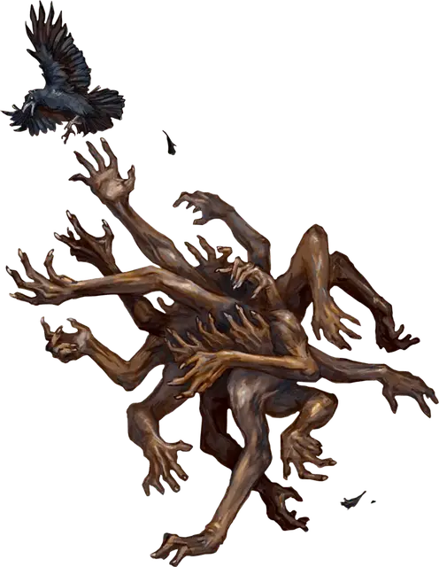

Сотрясатель душ
Soul Shaker
Большая Нежить, обычно хаотично-злая

Класс Доспеха 13 (природный доспех)
Хиты 76 (8к10 + 32)
Скорость 20 футов
| мод | спас | ||
|---|---|---|---|
| СИЛ | 20 | +5 | +5 |
| ЛОВ | 8 | −1 | −1 |
| ТЕЛ | 18 | +4 | +4 |
| мод | спас | ||
|---|---|---|---|
| ИНТ | 8 | −1 | −1 |
| МДР | 11 | +0 | +0 |
| ХАР | 14 | +2 | +2 |
Сопротивление урону некротическая энергия
Иммунитет к урону яд
Иммунитет к состояниям захват, испуг, истощение, окаменение, опутанность, отравление, очарование, паралич, сбивание с ног
Чувства слепое зрение 60 футов (слеп за его пределами), пассивное Восприятие 10
Языки Телепатия 60 фт.
Опасность 4 (1100 опыта)
Бонус мастерства +2
Особенности
Притягательная приманка (1/день). Сотрясатель душ может использовать заклинание обет [geas], не требующее компонентов заклинания и использующее Харизму в качестве базовой характеристики (Сл спасброска от заклинания 12).
Перестройка. Когда хиты сотрясателя душ уменьшается до 0, он распадается на 7 (1к4 + 5) ползающих рук [crawling claw]. Через 6 (1к12) дней, если по крайней мере две из этих ползающих рук живы, они телепортируются к месту смерти сотрясателя душ и сливаются вместе, после чего сотрясатель душ восстанавливается и восстанавливает все свои хиты.
Необычная природа. Сотрясатель души не нуждается в воздухе, еде, питье или сне.
Действия
Сокрушительная хватка. Рукопашная атака оружием: +7 к попаданию, досягаемость 5 футов, одна цель. Попадание: 14 (2к8 + 5) дробящего урона. Если целью является существо Среднего размера или меньше, оно становится схваченным (Сл высвобождения 15). Сотрясатель душ может одновременно держать в захвате только одно существо таким образом.
Бонусные действия
Пожирающий жизнь. Сотрясатель душ нацеливается на существо, которое он держит в захвате. Если цель не является Конструктом или Нежитью, она должна преуспеть в спасброске Телосложения Сл 14 иначе получит 7 (2к6) урона некротической энергией. Максимум хитов цели уменьшается на количество, равное полученному урону некротической энергией, и сотрясатель душ восстанавливает такое же количество хитов. Уменьшение хитов длится до тех пор, пока цель не окончит продолжительный отдых. Цель умирает, если этот эффект уменьшает максимум её хитов до 0.
Описание
Цепкая масса гуманоидных конечностей, сотрясатель душ - одержимый коллекционер трупов и конечностей. Эти кошмарные существа возникают из омерзительных скоплений отрубленных конечностей, подвергшихся воздействию некромантической энергии, или когда многочисленные ползающие руки объединяются.
Большинство жертв сотрясателя душ лишаются жизненных сил, а их плоть измельчается его многочисленными руками. Однако, если сотрясатель душ сталкивается с кем-то с впечатлительным, существо пытается очаровать человека, используя его в качестве приманки, чтобы заманить других в свои охотничьи угодья.
В случае поражения сотрясатель душ рассыпается на несколько движущихся живых конечностей. Ужас можно по-настоящему победить, только уничтожив эти бестелесные придатки. Если более чем одна из этих частей ускользает, сотрясатель душ восстанавливается в течение нескольких дней и снова начинает охоту.